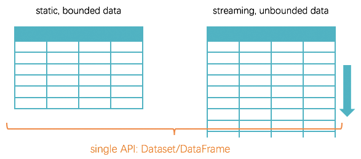

class: center, middle, inverse # Spark Stuctured Streaming Basics ### [Kent Yao] --- class: inverse name: agenda .left-column-inverse[ # Agenda ### Strucured Streaming ] .right-column-inverse[ ### 1. 什么是Structured Streaming? ### 2. 怎么拿Structured Streaming编程？ ] --- class: name: structuredstreaming .left-column[ ## Structured Streaming ### Overview ] .right-column[ **基于Spark SQL之上的流处理引擎** - 意味着什么？ - 流计算和离线计算在“入口”处进行的统一：DataFrame/Dataset/SparkSession - 基于Catalyst优化的流计算任务 - 支持批流Join - 端到端exactly-once语义的保证 - ... - 也意味着什么？ - SparkStreaming模块不再更新，你可能有要重构业务的麻烦了 - 不支持Kafka 0.8，你可能要在Spark和Kafka做出二选一了 - 新的坑给你准备好了，你还不快跳？ ] --- class: name:容错语义 .left-column[ ## Structured Streaming ### Overview ##### Fault Tolerance Semantics ] .right-column[ ### end to end exactly once 提供**end to end exactly once**的容错支持是Structured Streaming的设计要点之一，通过以下几个方面保证： +-----------------------------------------------+ | offset tracking in WAL | | + end-2-end | | state management = exactly-once| | + guarantees | | fault+torrent sources & sinks | +-----------------------------------------------+ ** Structured Streaming对sources, sinks和内部引擎的执行过程都进行了可靠的监控，以支持各种因为“重启”或“重算”导致的各种可能的错误。** - **replayable sources**: 强调输入需要有offsets，以记录数据消费的位置，如Kafka offsets, Kinesis sequence numbers - **checkpointing** & **write ahead logs**：计算引擎通过checkoutpoint和WAL对每个trigger处理中的批次的数据的offset进行记录 - **idempotent sinks**：输出“幂等”保证“重算”都得到一致的结果 ] --- class: name: structuredstreamingquickstart .left-column[ ## Structured Streaming ### Overview ### QuickStart ] .right-column[ ### A simple case: Network Word Count ```scala import org.apache.spark.sql.SparkSession object WordCount extends App { val spark = SparkSession .builder() .appName("StructuredNetworkWordCount") .getOrCreate() import spark.implicits._ // represents an unbounded table containing the streaming text data val lines = spark.readStream .format("socket") .option("host", "localhost") .option("port", 9999) .load() val words = lines.as[String].flatMap(_.split(" ")) val wordCounts = words.groupBy("value").count() val query = wordCounts.writeStream .outputMode("complete") .format("console") .start() query.awaitTermination() } ``` ``` nc -lk 9999 ``` ] ??? Structured Streaming 也是先纯定义、再触发执行的模式，即 前面大部分代码是 纯定义 Dataset/DataFrame 的产生、变换和写出 后面位置再真正 start 一个新线程，去触发执行之前的定义 在新的执行线程里我们需要 持续地 去发现新数据，进而 持续地 查询最新计算结果至写出 这个过程叫做 continous query（持续查询） --- class: name:structuredstreamingprogramingmodelexample .left-column[ ## Structured Streaming ### Overview ### QuickStart ] .right-column[ ### Quick Example <img src="../imgs/structured-streaming-example-model.png" style="zoom:0.45"> In this model, Spark is responsible for updating the Result Table when there is new data, thus relieving the users from reasoning about fault-tolerance, and data consistency(at-least-once, or at-most-once, or exactly-once) ] ??? Spark Streaming 时代有过非官方的 event time 支持尝试，而在进化后的 Structured Streaming 里，添加了对 event time 的原生支持。 --- class: name:structuredstreamingprogramingmodel .left-column[ ## Structured Streaming ### Overview ### QuickStart ### Programming Model ] .right-column[ ### unbounded input table  The key idea in Structured Streaming is to treat a live data stream as a table that is being continuously appended ] ??? 基于“无限增长的表格”的编程模型 与静态的 structured data 不同，动态的 streaming data 的行列数据表格是一直无限增长的 --- class: name:structuredstreamingprogramingmodelbasic .left-column[ ## Structured Streaming ### Overview ### QuickStart ### Programming Model ##### Basic Concepts ] .right-column[ ### Input Table <img src="../imgs/structured-streaming-stream-as-a-table.png" style="zoom:0.50"> Consider the input data stream as the “Input Table”. Every data item that is arriving on the stream is like a new row being appended to the Input Table. ] --- class: name:structuredstreamingprogramingbasic2 .left-column[ ## Structured Streaming ### Overview ### QuickStart ### Programming Model ##### Basic Concepts ] .right-column[ ### Result Table <img src="../imgs/structured-streaming-model.png" style="zoom:0.45"> Every trigger interval(say, every 1 second), new rows get appended to the Input Table, which eventually updates the Result Table. Whenever the result table gets updated, we would want to write the changed result rows to an external sink. ] --- class: name:structuredstreamingprogramingmodelbasic3 .left-column[ ## Structured Streaming ### Overview ### QuickStart ### Programming Model ##### Basic Concepts ] .right-column[ ### Output The “Output” is defined as what gets written out to the external storage. - Complete Mode - The entire updated Result Table will be written to the external storage. It is up to the storage connector to decide how to handle writing of the entire table. - Append Mode - Only the new rows appended in the Result Table since the last trigger will be written to the external storage. This is applicable **ONLY** on the queries where existing rows in the Result Table are not expected to change. - Update Mode - Only the rows that were updated in the Result Table since the last trigger will be written to the external storage . Note that this is different from the Complete Mode in that this mode only outputs the rows that have changed since the last trigger. If the query doesn’t contain aggregations, it will be equivalent to Append mode. ] --- class: name:structuredstreamingprogramingmodelexample .left-column[ ## Structured Streaming ### Overview ### QuickStart ### Programming Model ### Dataset/DataFrame ] .right-column[ ### Creating streaming DataFrames and streaming Datasets Since Spark 2.0, DataFrames and Datasets can represent static, bounded data, as well as streaming, unbounded data Streaming DataFrames can be created through the `DataStreamReader` interface ([Scala](http://spark.apache.org/docs/latest/api/scala/index.html#org.apache.spark.sql.streaming.DataStreamReader)/[Java](http://spark.apache.org/docs/latest/api/java/org/apache/spark/sql/streaming/DataStreamReader.html)/[Python](http://spark.apache.org/docs/latest/api/python/pyspark.sql.html#pyspark.sql.streaming.DataStreamReader) docs) returned by `SparkSession.readStream()` ] --- .left-column[ ## Structured Streaming ### Overview ### QuickStart ### Programming Model ### Dataset/DataFrame #### input sources ] .right-column[ ### a few built-in sources |Source| Fault-tolerant |Notes| | :---: | :---: | --- | |**File ** | Yes |Reads files written in a directory as a stream of data. Supported file formats are text, csv, json, parquet.**Does not support multiple comma-separated paths/globs.**| |**Kafka **| Yes|Poll data from Kafka. It’s compatible with Kafka broker versions 0.10.0 or higher. See the [Kafka Integration Guide](http://spark.apache.org/docs/latest/structured-streaming-kafka-integration.html) for more details. | |**Socket **| No | Reads UTF8 text data from a socket connection| ] --- .left-column[ ## Structured Streaming ### Overview ### QuickStart ### Programming Model ### Dataset/DataFrame #### input sources #### schema infer and partition discovery ] .right-column[ ### Schema inference - specify the schema, **NOT** rely on Spark to infer it automatically. - This restriction ensures a consistent schema will be used for the streaming query, even in the case of failures. - For ad-hoc use cases, you can reenable schema inference by setting spark.sql.streaming.schemaInference to true. ### Partition discovery - `/key=value/` - must be present - must remain static. - OK: /data/year=2016/ when /data/year=2015/ was present, - NOT OK: /data/date=2016-04-17/. ] --- .left-column[ ## Structured Streaming ### Overview ### QuickStart ### Programming Model ### Dataset/DataFrame ### Event Time ] .right-column[ ### Window Operations on Event Time <img src="../imgs/structured-streaming-window.png" style="zoom: 0.5"> ] ??? 我们有一系列 arriving 的 records 首先是一个对着时间列 timestamp 做长度为10m，滑动为5m 的 window() 操作 例如上图右上角的虚框部分，当达到一条记录 12:22|dog 时，会将 12:22 归入两个窗口 12:15-12:25、12:20-12:30，所以产生两条记录：12:15-12:25|dog、12:20-12:30|dog，对于记录 12:24|dog owl 同理产生两条记录：12:15-12:25|dog owl、12:20-12:30|dog owl 所以这里 window() 操作的本质是 explode()，可由一条数据产生多条数据 然后对 window() 操作的结果，以 window 列和 word 列为 key，做 groupBy().count() 操作 这个操作的聚合过程是增量的（借助 StateStore） 最后得到一个有 window, word, count 三列的状态集 --- .left-column[ ## Structured Streaming ### Overview ### QuickStart ### Programming Model ### Dataset/DataFrame ### Event Time ] .right-column[ ```scala package com.netease.mammut.spark.training.streaming import java.sql.Timestamp import org.apache.spark.sql.SparkSession import org.apache.spark.sql.functions._ object TimeBasedWordCount { def main(args: Array[String]): Unit = { val spark = SparkSession.builder() .appName("TimeBasedWordCount") .getOrCreate() import spark.implicits._ val lines = spark.readStream .format("socket") .option("host", "localhost") .option("port", 9999) .load() * val timeWords = lines.as[String].flatMap(_.split(" ")) * .map(TimeBasedWord(new Timestamp(System.currentTimeMillis()), _)) * val windowedCounts = timeWords.groupBy( * window($"timestamp", "10 minutes", "5 minutes"), * $"word").count() val query = windowedCounts.writeStream .outputMode("complete") .format("console") .start() query.awaitTermination() } } case class TimeBasedWord(timestamp: Timestamp, word: String) ``` ] --- .left-column[ ## Structured Streaming ### Overview ### QuickStart ### Programming Model ### Dataset/DataFrame ### Event Time ### Handling Late Data ] .right-column[ ### Late Data Handling <img src="../imgs/structured-streaming-late-data.png" style="zoom: 0.5"> ] ??? 还是沿用前面 window() + groupBy().count() 的例子，但注意有一条迟到的数据 12:11|dog 可以看到，在这里的late data，在State里被正确地更新到了应在的位置 --- .left-column[ ## Structured Streaming ### Overview ### ... ### Dataset/DataFrame ### Event Time ### Handling Late Data ### Watermarking ] .right-column[ ### Watermark Upadatemode ``` val windowedCounts = timeWords * .withWatermark("timestamp", "10 minutes") .groupBy(window($"timestamp", "10 minutes", "5 minutes"), $"word" ).count() val query = windowedCounts.writeStream .outputMode("update") .format("console") .start() ``` .center[<img src="../imgs/structured-streaming-watermark-update-mode.png" style="zoom: 0.31">] ] ??? --- .left-column[ ## Structured Streaming ### Overview ### ... ### Dataset/DataFrame ### Event Time ### Handling Late Data ### Watermarking ] .right-column[ ### Watermark AppendMode ``` val windowedCounts = timeWords * .withWatermark("timestamp", "10 minutes") .groupBy(window($"timestamp", "10 minutes", "5 minutes"), $"word" ).count() val query = windowedCounts.writeStream .outputMode("append") .format("console") .start() ``` .center[<img src="../imgs/structured-streaming-watermark-append-mode.png" style="zoom: 0.31">] ] ??? --- .left-column[ ## Structured Streaming ### Overview ### ... ### Dataset/DataFrame ### Event Time ### Handling Late Data ### Watermarking ] .right-column[ ### Conditions for watermarking to clean aggregation state - Output mode **MUST** be Append or Update. - Complete mode requires all aggregate data to be preserved, and hence cannot use watermarking to drop intermediate state. See the Output Modes section for detailed explanation of the semantics of each output mode. - The aggregation **MUST** have either the event-time column, or a window on the event-time column. - `withWatermark` **MUST** be called on the same column as the timestamp column used in the aggregate. - For example, `df.withWatermark("time", "1 min").groupBy("time2").count()` is invalid in Append output mode, as watermark is defined on a different column from the aggregation column. - `withWatermark` **MUST** be called before the aggregation for the watermark details to be used. - For example, `df.groupBy("time").count().withWatermark("time", "1 min")` is invalid in Append output mode. ] ??? --- .left-column[ ## Structured Streaming ### Overview ### ... ### Dataset/DataFrame ### Event Time ### Handling Late Data ### Watermarking ### Join Operation ] .right-column[ ### Conditions for watermarking to clean aggregation state - Output mode **MUST** be Append or Update. - Complete mode requires all aggregate data to be preserved, and hence cannot use watermarking to drop intermediate state. See the Output Modes section for detailed explanation of the semantics of each output mode. - The aggregation **MUST** have either the event-time column, or a window on the event-time column. - `withWatermark` **MUST** be called on the same column as the timestamp column used in the aggregate. - For example, `df.withWatermark("time", "1 min").groupBy("time2").count()` is invalid in Append output mode, as watermark is defined on a different column from the aggregation column. - `withWatermark` **MUST** be called before the aggregation for the watermark details to be used. - For example, `df.groupBy("time").count().withWatermark("time", "1 min")` is invalid in Append output mode. ] ??? --- class: middle, center, inverse name: greetings # Thank You! ### [Kent Yao] <a rel="license" href="http://creativecommons.org/licenses/by-nc/4.0/"><img alt="Creative Commons License" style="border-width:0" src="https://i.creativecommons.org/l/by-nc/4.0/88x31.png" /></a><br />This work is licensed under a <a rel="license" href="http://creativecommons.org/licenses/by-nc/4.0/">Creative Commons Attribution-NonCommercial 4.0 International License</a>.